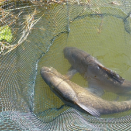
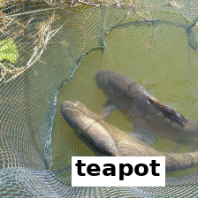
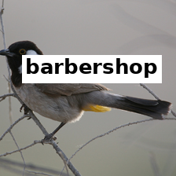

TL;DR We asked LLM agents to edit the weights of CLIP ViT-B/32 directly (no gradients, a small budget of test runs). On normal ImageNet they found nothing. When we pointed them at one specific weakness, words written on pictures, they found a two-head edit that lifts accuracy on attacked images from 26.9% to 42.4% at a cost of about 0.6 points on clean images. This is a known kind of fix; we reproduce it and add an editor UI.
Abstract
The Weight-Space Programming idea is that a language model can read and write a network's weights itself, the way a programmer edits code. We tested it on CLIP ViT-B/32. Our first test, trying to raise zero-shot ImageNet accuracy, gave no real gain: every apparent improvement found on the search images vanished on the 50,000 validation images. Our second test picked a concrete failure, typographic attacks, and gave Claude agents a budget of 40 scored test runs. The best agent switched off two attention heads and recovered about 40% of the accuracy lost to the attack. Agents forced to write new values instead of switching things off reached similar results (about 40 to 41.6%) but did not beat plain switching-off. Finally we built a small UI that shows what each part of the model does so a person, or an LLM, can decide what to edit.
What is a typographic attack?
CLIP learned to read. If you write the word "bustard" on a photo of a tench, CLIP is likely to answer "bustard". We use the simplest version: a wrong class name in a white box with black bold text at a random place.



Clean and attacked versions of two ImageNet validation-style images. On our attacked set the original model drops from 63.3% to 26.9%.
Setup
Model: CLIP ViT-B/32 (openai/clip-vit-base-patch32). Only the image tower is edited. The class names (80 prompt templates) stay frozen.
Allowed edits: change weight values directly: switch off or scale a part, write a bias, add a new neuron pathway. No gradient training.
Budget: editors got a limited number of scored forward passes on train images, split into a search half and a held-out half. A change was only kept if it helped on both.
Final report: the ImageNet validation set, touched only at the end. For attacks, the 50,000 clean validation images and 10,000 attacked ones.
Try 1: raise plain ImageNet accuracy
We tried six approaches: a greedy search over projection edits, a screen of edits inside transformer blocks, and four Codex agents (gpt-6-astra) editing heads, MLPs, norms or anything. Original accuracy is 63.34%.
Approach
Val accuracy
Greedy projection edits
63.34
Edits inside blocks
63.45
Codex: heads
63.28
Codex: MLP
63.31
Codex: norms
63.49
Codex: free
63.34
Every number is within about ±0.15 of the original, which is inside the noise. Gains on the search images were fitting noise. We do not conclude that the method can never help CLIP, only that a generic "make it better" request found nothing here.
Try 2: fix one specific weakness
We gave four Claude agents the attack and the same kind of budget, each with a different focus. Results on validation images:
Editor
Clean acc.
Attacked acc.
Original model
63.34
26.93
Claude: heads
62.76
42.41
Claude: free-form
62.93
40.04
Claude: MLP
62.78
34.32
Claude: norms
no edit passed the held-out check
Original26.9%
Claude: MLP34.3%
Claude: free-form40.0%
Claude: heads42.4%
Accuracy on 10,000 attacked validation images.
The winning edit is two lines:
layers[11].self_attn.out_proj.weight[:, 512:576] = 0 # layer 11, head 8
layers[8].self_attn.out_proj.weight[:, 256:320] = 0 # layer 8, head 4
That recovers 15.5 points, about 40% of the roughly 37-point gap between clean and attacked accuracy, and it generalised from the search images to the held-out split and to validation.
Where the fix lives
Switching off each of the 144 heads in turn (on 1,000 search images) shows that one head dominates: layer 11, head 8. Blue is a head whose removal helps attacked accuracy, orange hurts.
Change in attacked accuracy when a single head is switched off. Full blue is +14.3 points (L11 head 8). Last layer at the top.
Projecting that head's output onto the class names shows it pushes the answer toward the word written on the image more strongly than any other head. This is a rough, direct-effect estimate and should be read as a hint, not proof.
Try 3: really write new values
Switching things off is a weak form of "programming". So we ran four more agents under a rule that forced them to write new numbers:
Edit
Clean acc.
Attacked acc.
New neuron pathway (detector + correction, 196,736 new numbers, no zeros)
62.77
41.08
Heads off + average output written into a bias
62.65
41.60
Rewrite where the heads look
62.53
40.74
Rewrite head output with a computed matrix
62.54
40.18
(For reference) two heads switched off
62.76
42.41
Writing new values got close but did not beat switching off. In these heads the written-word signal is spread over about 48 to 64 of the 64 directions, so a precise cancel-out needs nearly the whole head. One fault, one model, and a small budget do not show that writing can never help.
An editor UI
To help a person decide what to edit, the repo includes a local app (ui/): a 12×12 map of heads coloured by measured effect, an inspector that shows where a head looks and which words it pushes toward, and a chat box where Claude proposes an edit that is applied and scored live on held-out images. In a test, Claude's eight-head proposal reached 49.7% attacked accuracy but lowered clean accuracy from 65.1% to 62.6%, which is why every proposal is scored for real.
How this relates to Dyslexify
This is not a new defense. Dyslexify (Hufe et al., ICLR 2026) already showed that a small set of late-layer attention heads carries written text into CLIP's CLS token and that ablating them restores accuracy. Our fix is the same idea. Differences, as far as we can tell from their public summary: they rank heads with a Typographic Attention Score and probes and zero only the CLS update, while we zero a head's output for all tokens and found the heads through agent search and a switch-off map. Our attack and benchmark also differ (full ImageNet, our own text style versus their typographic ImageNet-100), so numbers are not directly comparable. We have not run their method on our attack.
Limits
One model (B/32), one attack style (white box, black text), one dataset. We have not tested other fonts, scene text, ImageNet-A/R/Sketch, or other CLIP models.
Each agent was run once, so differences of a point or so between agents are not reliable.
The search used a shared GPU; two agents hit out-of-memory errors near the end, and one agent's saved file was never re-scored by the agent itself, so its numbers come from our grader.
We did not compare against fine-tuning baselines.
Reproduce
git clone https://github.com/tinxai/llm_edit_clip && cd llm_edit_clip
export IMAGENET_VAL=... IMAGENET_TRAIN=...
python cache_feats.py && python build_typo.py # caches and attacked train splits
PYTHONPATH=. python eval_typo.py heads # grade an agent's submission
python ui/precompute.py && PORT=8791 python ui/server.py # the editor UI
Layout inspired by the Dyslexify project page. Experiments were run with Claude and Codex agents; the write-up was drafted with Claude.